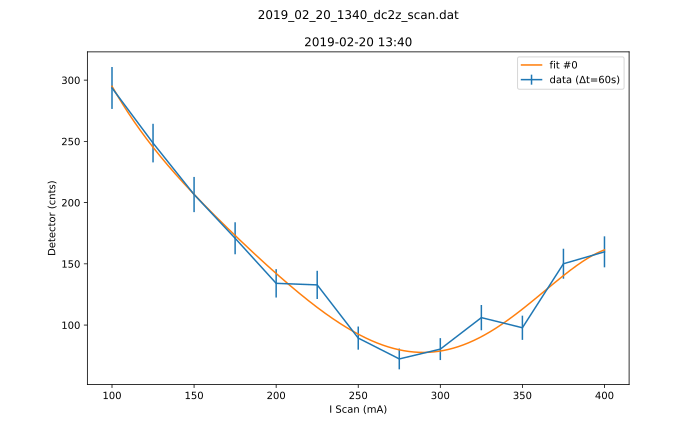

Here is some basic information about the measurement, which was either provided by you, or automatically detected.
Here is some basic information about the measurement, which was either provided by you, or automatically detected.
100.0400.0[72.36][293.6]Horizontal axis values where vertical axis is max or min:
[275.0][100.0]This gives a contrast of [0.6045469450213138].
Parameters:
-1.0054528249039e-091.2004995990915036e-06-0.00053755267130429320.11737373646564694-14.002603690041292949.0590493331873Covariance:
['[[ 8.71149042e-19, \n-1.10309612e-15, \n 5.35268168e-13, \n-1.23586937e-10,\n 1.34727632e-08, \n-5.50277641e-07],\n [-1.10309612e-15, \n 1.40171500e-12, \n-6.82770664e-10, \n 1.58287558e-07,\n -1.73288552e-05, \n 7.10723464e-04],\n [ 5.35268168e-13, \n-6.82770664e-10, \n 3.33977348e-07, \n-7.77813446e-05,\n 8.55662650e-03, \n-3.52649163e-01],\n [-1.23586937e-10, \n 1.58287558e-07, \n-7.77813446e-05, \n 1.82070368e-02,\n -2.01400503e+00, \n 8.34775020e+01],\n [ 1.34727632e-08, \n-1.73288552e-05, \n 8.55662650e-03, \n-2.01400503e+00,\n 2.24162480e+02, \n-9.35292648e+03],\n [-5.50277641e-07, \n 7.10723464e-04, \n-3.52649163e-01, \n 8.34775020e+01,\n -9.35292648e+03, \n 3.93196621e+05]]']
Contrast for fit #0: 0.5831566374743183
No information about the boundaries could be presented, because the following exception occured: zip argument #2 must support iteration
Please report this error by opening a new ticket in Github. Most likely, the function that should detect the boundaries was not defined yet.